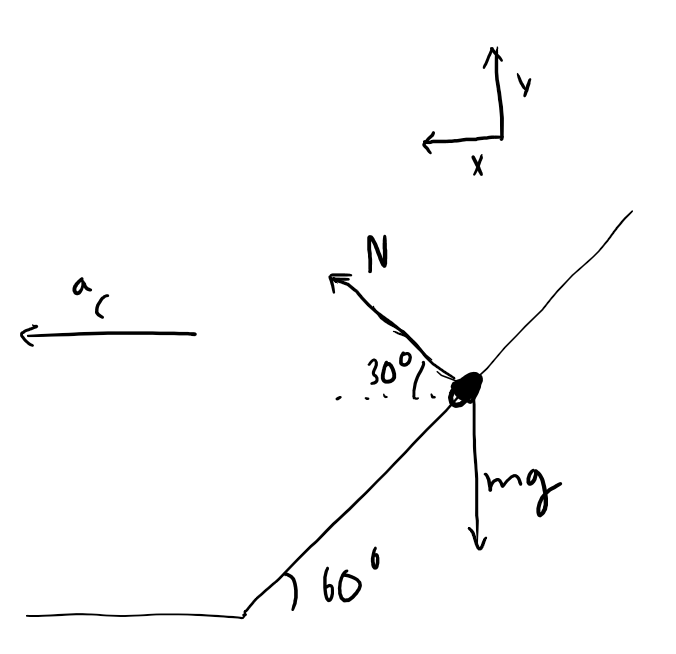

2019 SIN Problem 5
Question
It's the Northern Manitoba Trapper's Festival, and Lonesome Mary is ready to win the ice fishing derby. She spools her fishing line on an oldie time bike wheel (radius \(2.9\text{ m}\)), that lays horizontally on the frictionless ice covering the hole. A red bob with a hole drilled in it is placed on a frictionless rod, attached at the edge of the wheel, and bent upwards at \(60\) degrees as illustrated. Suddenly, a huge jackfish takes the hook and unspools the line, causing the wheel to rotate at a frequency of \(3.79\text{ Hz}\). At what length \(L\) must Mary place the bob so that upon release it does not slide up or down? Answer in cm.
\(\textbf{(A) } 6.22 \qquad\textbf{(B) } 9.33 \qquad\textbf{(C) } 16.0 \qquad\textbf{(D) } 19.3 \qquad\textbf{(E) } 26.4 \)
Solution
First, draw the free body diagram.
Summing up the forces in the y-direction gives \(N\sin(30) = mg\). Summing up the forces in the x-direction (radial) gives \(F_\text{centripetal} = m\omega^2r = N\cos(30)\). Isolating for \(N=\frac{m\omega^2r}{\cos(60)}\) in the second equation and plugging it into the first equation yields: \begin{align*} mg &= m\omega^2r\tan(30)\\ g &= (2\pi\cdot f)^2r\tan(30) \\ r &= \frac{g}{\tan(30)f^24\pi^4} \end{align*} Plugging in the values like a dirty engineer gives \(r=2.9963 \text{ m}\). This is the horizontal distance the washer is away from the point of rotation. Since the wheel has a radius of \(2.9\text{ m}\), the horizontal distance of the washer from the point the incline starts is \(0.0963\text{ m}\). However, the question asks for the distance up the incline. So we will have to resort to basic trigonometry. Let \(L\) be the distance up the incline. Then \(\cos(60)=\frac{0.0963}{L}\) and solving for \(L\) gives \(\boxed{\textbf{(C) } 19.3}\)